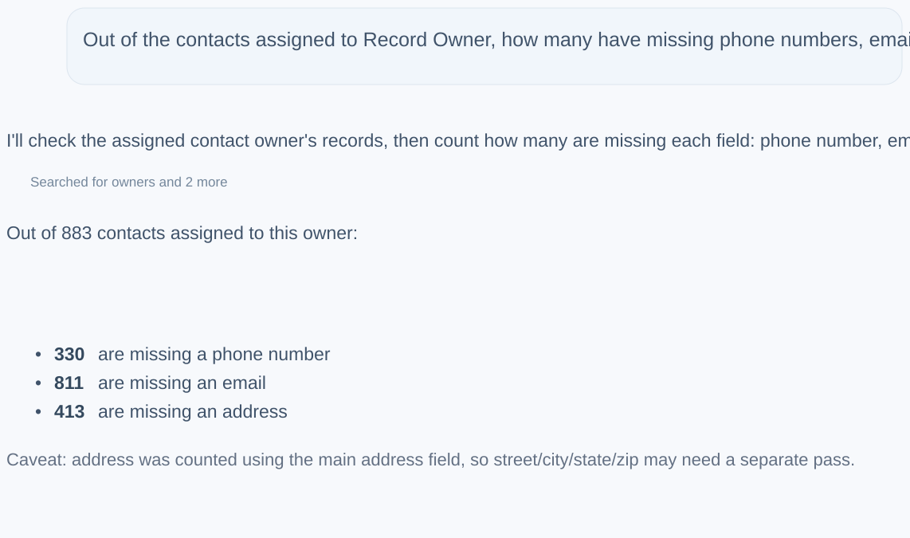
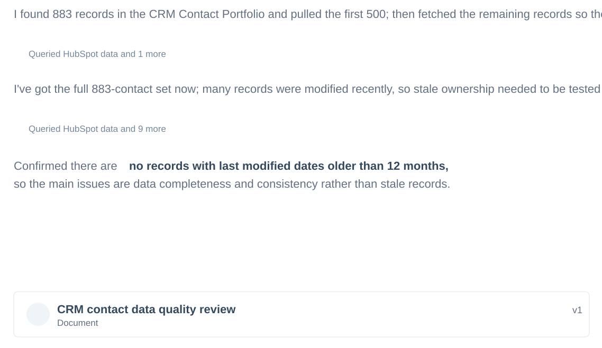

Not stale
No records had last-modified dates older than 12 months, so cleanup could focus on data standards instead of ownership reactivation.
A consulting-style assessment of CRM contact quality, governance risk, cleanup prioritization, and business impact. This project shows how customer operations, HubSpot administration, analytics, and AI-assisted workflows come together to improve process reliability.
The first deliverable translated raw CRM data-quality issues into a practical prioritization view. The dashboard separates high-volume cleanup work from high-severity contactability risk.

Missing customer information, placeholder values, duplicate fields, and inconsistent field usage created contactability risk and reporting reliability concerns.
The operating question was: which data problems create customer-contact risk, which create reporting risk, and what should be fixed first to protect follow-up quality?
Plain-language questions were converted into CRM record counts for missing phone numbers, emails, and addresses.

The first assumption to test was whether incomplete records were stale. The audit found the opposite: the portfolio was active, which meant the issue was not neglect. It was inconsistent field rules, unclear source-of-truth guidance, and process design.
No records had last-modified dates older than 12 months, so cleanup could focus on data standards instead of ownership reactivation.
Active records still had missing fields, placeholder values, and inconsistent property use.
Unclear field rules create weak reporting, missed contact opportunities, and slower team follow-up.

The CRM needed governance rules, not just one-time cleanup.
Similar properties created uncertainty about which field should be trusted for reporting, workflows, or leadership visibility.
Invalid placeholders made some records look more complete than they really were, weakening data-quality confidence.
Job title and birthday usage patterns pointed to inconsistent field behavior and segmentation risk.

Set required fields, validation rules, intake guidance, and record-owner expectations so bad data is stopped at entry.
Define allowed values, field definitions, naming conventions, and quality checks for fields used in reporting.
Merge, retire, or document duplicate properties so teams know which field is the source of truth.

Define required fields, owner expectations, placeholder rules, and intake checks. Prioritize records with no usable contact path first.
Resolve missing email and address coverage, normalize key values, and build recurring review lists for record owners.
Document the source of truth, retire duplicate properties, add validation or workflow prompts, and turn governance into a monthly operating rhythm.
Cleaner contact fields reduce missed outreach risk and make lifecycle management less dependent on memory.
Standardized fields and source-of-truth rules improve dashboards, segmentation, and leadership reporting.
A 30-60-90 governance plan turns cleanup into an operating rhythm through training, validation, and recurring review.